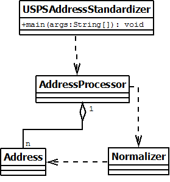

Group 5
Contact: Stephanie Parkhurst, srp6511@truman.edu
Latest Revision Date: 03/30/16
The purpose of this document is to lay out the design for a system that normalizes addresses using USPS standards. This system will be built for Dr. Jon Beck. The design presented in this document is based on group5_requirements.html which was created on February 22, 2016. Delivery of this document will be on Wednesday March 23, 2016 at 12:00 pm.
The main architectural style is n-tier. N-tier was chosen because the system has different levels including GUI, address preprocessing, and address normalization. There is a standard process which the user instantiates. Some of n-tier’s strengths lie in separation of duties and keeping it simple. Information hiding is weaker within the n-tier architecture model, but it is not necessary for this project. Within n-tier, there is high modularity and decoupling. The well-defined interfaces makes it easier to adapt to change and can quickly create a working release.
Future change will be possible through the modularity that the n-tier structure provides. If any new normalization rules are needed, more tiers can be written to provide the additional functionality.
4.1 The team has elected to develop the system in Java. Java was chosen for 3 reasons:

The input and output class. Its main job is to display information to the user through a GUI or command line. This includes input fields and output.(Requirement 3.4) It will be dependent on the AddressProcessor.
The address formatting class. The job of the address processor class is to format all addresses from the input layer to an easy to use form for the Normalizer. It will be dependent on the Normalizer class and aggregate the Address class.
This class normalizes addresses. It will be a set of functions to make sure the address conforms to USPS standardization and normalization procedures.(Requirement 2.5) It will be dependent on the Address class.
A basic address class. It will hold information of the address and is a wrapper class.